Step-by-step guide
Set up once.
Then two touches a day.
This guide walks through SYNER from the first launch to the monthly report, then on to working with a supervisor and covering for a colleague. Setting up takes about ten minutes. After that, a day takes seconds.
Download
First, get the app.
Point your iPhone camera at the code, or touch the badge. Then follow the steps below.
Set up
1Create a work pattern
A work pattern describes how a team works: which days of the cycle are work days, and when the shift starts and ends. Start here, because every employee follows a pattern.
- Open Settings, then Work Patterns, and touch +.
- Choose a template. Weekly 5 and Weekly 6 are ordinary weeks. Short Rotation and Long Rotation are for crews that rotate. Blank pattern starts from nothing.
- Give the pattern a name your team will recognise.
- Set the length of the cycle, then tap each day to switch it between work and off. Dark days are work days.
- Set when the shift starts and ends, then its working hours and regular hours. Hours beyond the regular hours are overtime.
- Touch Save.
Example. A shift from 07:00 to 17:00 with 10 working hours and 8 regular hours gives 2 hours of overtime on every full day.
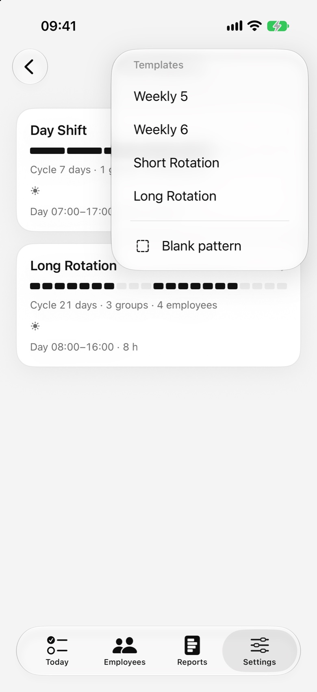
12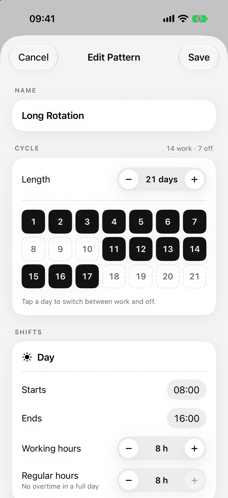
345Set up
2Fine-tune the pattern
Scroll down in the pattern editor for three optional settings. Skip any your team does not need.
First and last day
A work cycle is a run of work days between two rests. If the first day starts later, or the last day ends earlier, switch on First day starts at its own time or Last day ends at its own time and choose the time.
Overtime day by day
Switch on Set overtime day by day when overtime is not the same every day. Tap a day in the table, then use plus and minus to set its overtime. Rest days are shown dotted. Overtime changes the hours only; the shift keeps its times.
Groups
A rotation usually has several crews on the same cycle, offset from each other. Add a group for each crew and set Day 1 falls on to the date that crew is on the first day of the cycle.
Changing a pattern later. When people already follow the pattern, the app asks from which date the change applies. Earlier days stay exactly as they were.
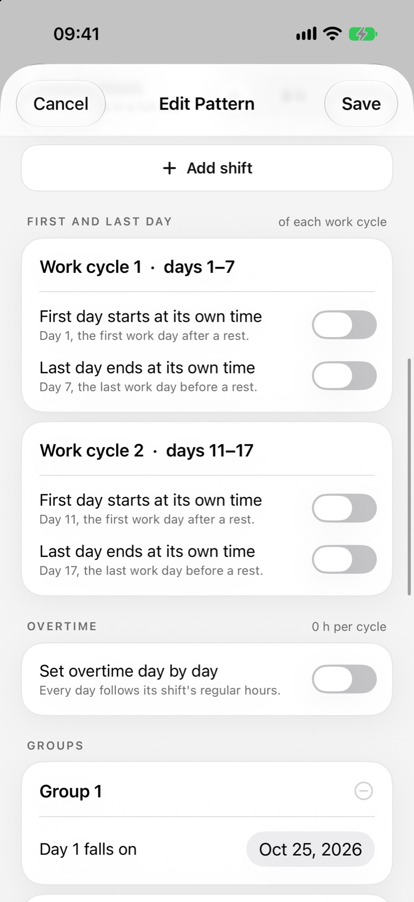
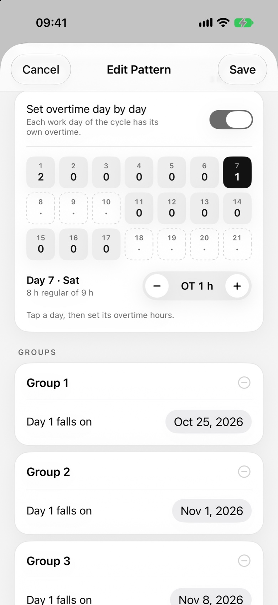
Set up
3Add your people
Add each person once. From then on they appear on Today on every day they are scheduled.
- Open Employees and touch +.
- Enter the name. The app shows how it will appear in lists.
- Choose Permanent or Assignment. An assignment has an end date and leaves the list by itself when it is over.
- Add the badge number, job title and phone if you use them. With a phone number saved, you can call the person from their page.
- Set the start date, then choose the work pattern and, for a rotation, the group. The next two weeks are shown underneath so you can check the schedule.
- Touch Save.
Moving someone later. Open the person, touch Edit and choose the new pattern or group. The app asks from which date, and earlier days are not touched.
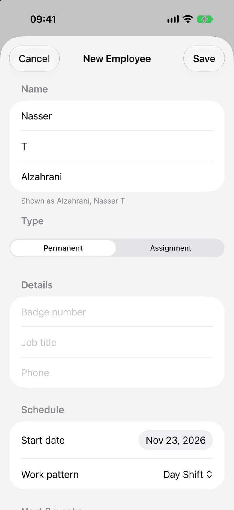
Set up
4Set calendar holidays
A calendar holiday is one date for the whole team, such as a national day. Enter it once and it applies to everyone.
- Open Settings, then Calendar Holidays, and touch Add holiday.
- Give it a name, then set the first day and the last day.
- Switch on Repeats every year if it falls on the same dates each year. Leave it off for holidays that move, like Eid.
- Touch Add holiday.
To change a holiday later, touch it in the list. The same form opens, with Save holiday and Remove holiday at the bottom.
What happens on a holiday
Each work pattern decides for its own people. In the pattern editor, under On calendar holidays, choose Day off: everyone scheduled shows as Holiday, and anyone who still comes in is ticked and earns overtime. Or choose Work, paid as overtime: attendance is recorded as usual and the whole shift counts as overtime, and whoever does not come in is on Holiday, not absent. A holiday on someone's rest day changes nothing for them.
Year after year
A repeating holiday is listed for this year and the next, and the app adds each new year by itself. Every year is its own entry, so you can change or remove one without touching the others. Removing one asks whether you mean this year only or this and all coming years.
Holidays that have passed stay under Earlier this year. Each finished year folds into a single row under Past years; touch the year to open it.
Your records stay. Adding, changing or removing a holiday never removes attendance you have already recorded.
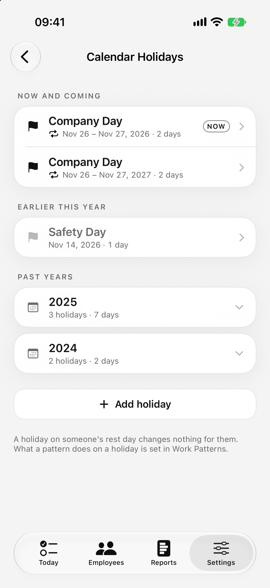
1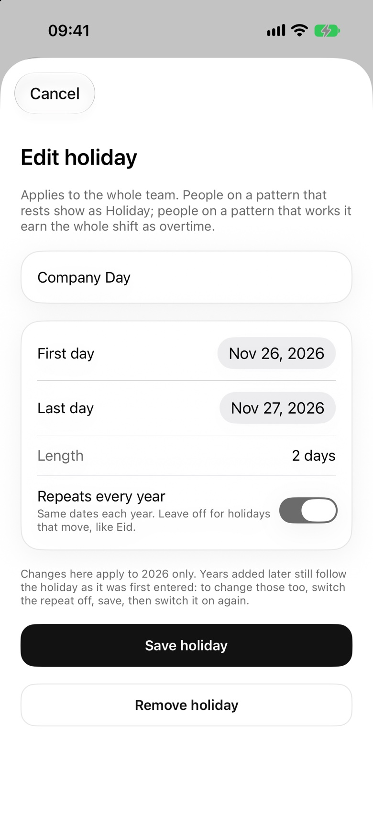
23Record
5Record the day
Today lists everyone who is scheduled, grouped by pattern and shift. Each person has two circles: one for the start of the shift and one for the end.
- At the start of the shift, touch All Start to mark everyone present, or touch the Start circle beside each person.
- Touch a circle again if someone is not there.
- At the end of the shift, touch All End or each person's End circle. Two ticks make a full day.
- Touch a name to open that person's day for anything out of the ordinary.
- Use the arrows to go to an earlier day, or touch the date to pick one. Days in the future cannot be recorded.
The three tiles at the top count who is On duty, who is Away and who is Off today. The dots under the name fill as your team arrives.
Nothing counted unfairly. A rest day is never an absence, and a day you did not record is shown as not recorded, never as absent.
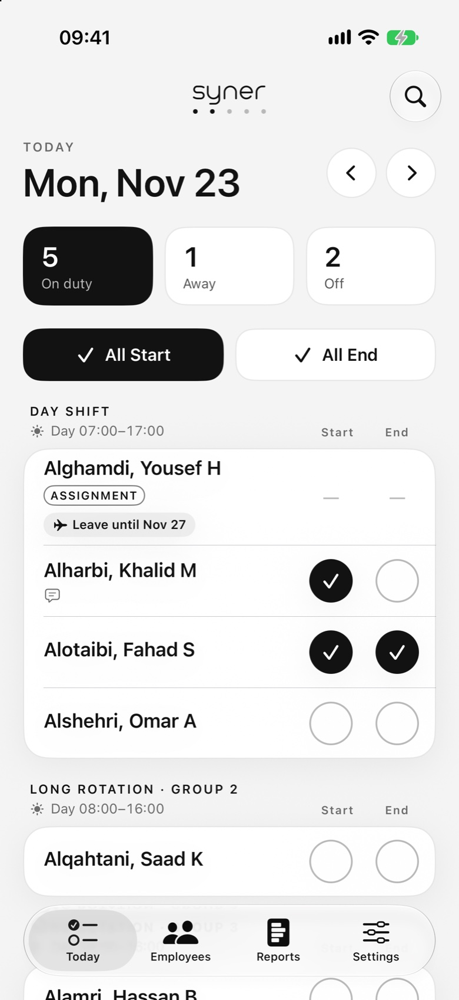
12345Record
6Open a day
Most days need two touches and nothing else. Open a day when something was different.
- Day status. Choose On duty, Leave, Sick, Excused, Course or Holiday.
- Attendance. Tick the start and the end of the shift, the same as on Today.
- Actual time. Switch on Arrived or Left only if the time was different from the shift, and enter it. The app works out late arrival and early leaving.
- Overtime. Use plus and minus to add or take away overtime for this one day. This is available on On duty days.
- Note. Write anything worth remembering. A small mark appears beside the name on Today.
The card at the top always shows the result: the day's outcome, the regular hours and the overtime. Clear this day at the bottom removes everything recorded for it.
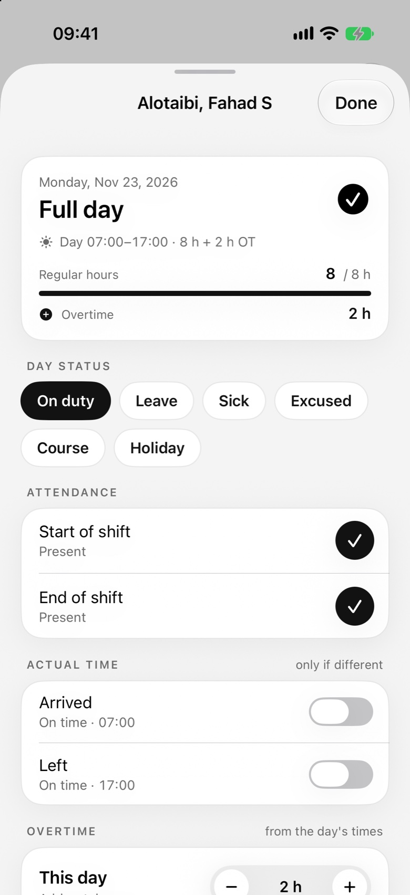
123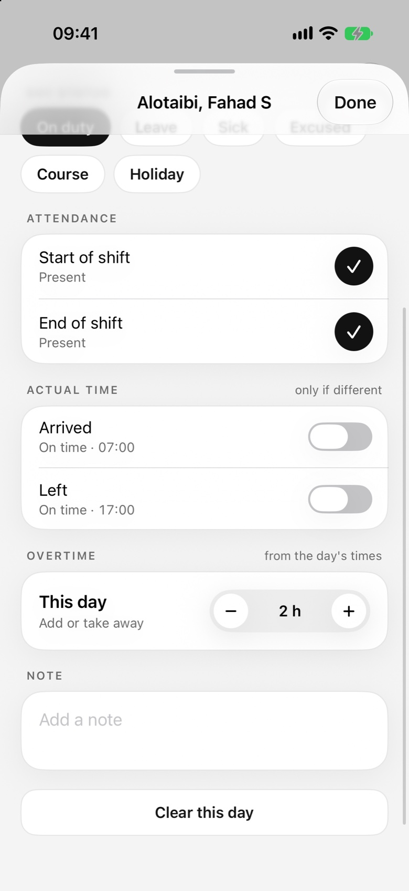
45Record
7Record leave
Leave is set once for the whole period, not day by day.
- Open the first day of the leave for that person and choose Leave.
- Pick the last day of the leave on the calendar.
- Touch Save leave.
Every scheduled day in that period is shown as Leave, and the person's row on Today says until when. Rest days inside the period stay rest days.
Back early? Open the day they returned and choose On duty. The leave ends there.
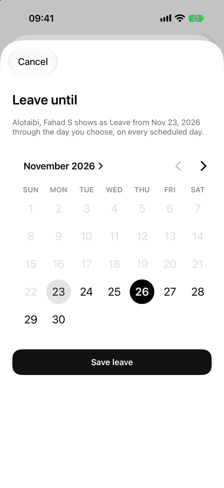
Review
8Follow the month
Each person has a page with the calendar of the month and the totals that matter.
- Open Employees and touch a name.
- Read the calendar. Every day carries a symbol: a tick for a full day, a half circle for an incomplete one, a bed for a rest day, and a symbol for each status.
- Touch any day up to today to open it and correct it.
- Scroll down to This month for the counts, the regular hours against the hours required, and the overtime.
- Use the arrows beside the month to look back.
- To call the person, touch the phone button beside their number. Touch and hold it to copy the number.
Incomplete means one of the two ticks is missing. Touch the day and finish it so the hours are counted.
Someone left the team? At the bottom of their page, Mark as transferred keeps their history and asks for their last day. Delete employee removes them with their attendance records for good; the app asks you to confirm first.
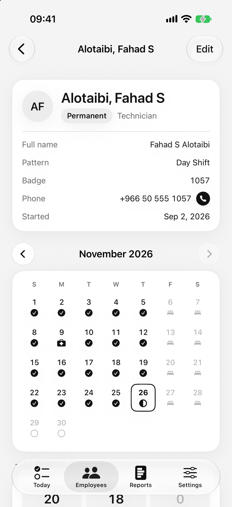
6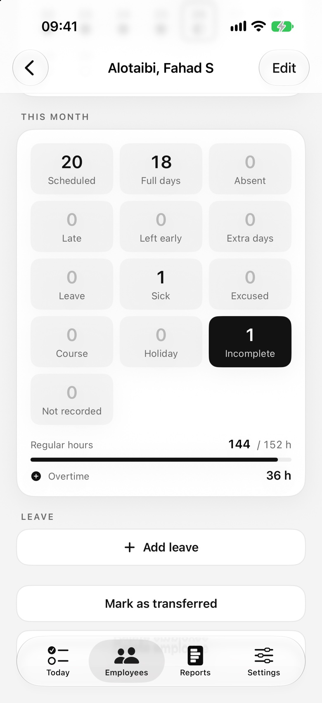
Review
9Share reports
Reports brings the whole team together for any month.
- Open Reports and choose the month with the arrows.
- Read the Workforce card for the team's totals. A dark label points to days that still need attention.
- Touch Group report for the monthly sheet: every person, every day, the regular hours and the overtime on one page.
- Touch the share button on the sheet to send it as a PDF.
- Touch a person in the list for their own report, or use the share button at the top of Reports to export the totals as a CSV file for a spreadsheet.
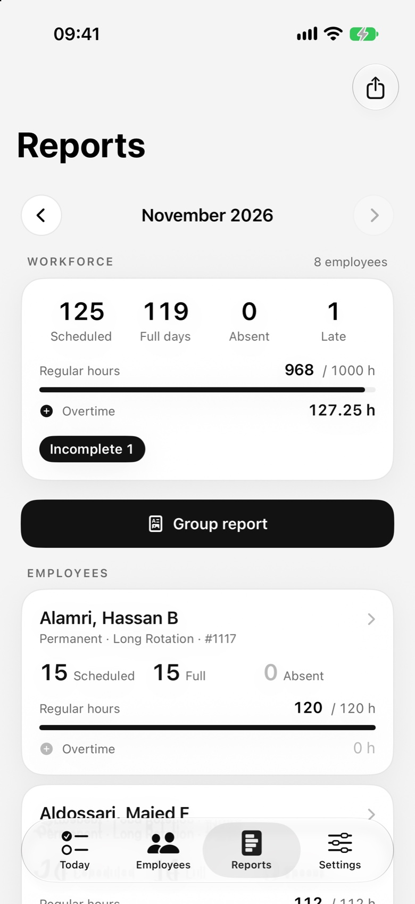
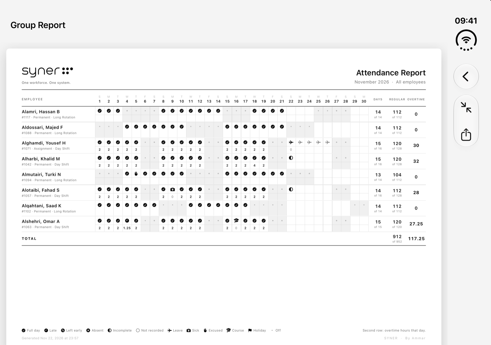
Protect
10Keep your data safe
Everything lives on your iPhone. There is no account and no SYNER server, so a backup is the copy that protects you if the iPhone is lost.
Back up
- Open Settings, then Backup, and touch Export backup.
- Save the file in Files or iCloud Drive. Do this regularly.
- To bring it back, or to move to a new iPhone, touch Choose backup file. The app shows what the file holds before anything changes.
- Or switch on iCloud backup on the same screen. A copy is then kept in the SYNER folder of your own iCloud Drive, once a day after something has changed, when you leave the app. The last 7 days are kept, and they are listed on this screen to restore from, also on a new iPhone.
Hand over
Settings, then Transfer, moves data to another person in an encrypted file that opens only with a code. There are three kinds:
- Transfer an employee moves one person, with their history, to another leader.
- Hand over for cover lends your whole team to a colleague while you are away. It comes back. See steps 13 and 14.
- Hand over everything is for whoever takes over your position for good. It carries your patterns, employees and records, and the teams you follow.
- Send the file any way you like, and give the code separately. The other person opens the file in SYNER, or under Transfer, then Receive, and enters the code.
Two things to remember. A backup file is not encrypted, so keep it somewhere safe. A transfer code cannot be recovered; if it is lost, make a new transfer.
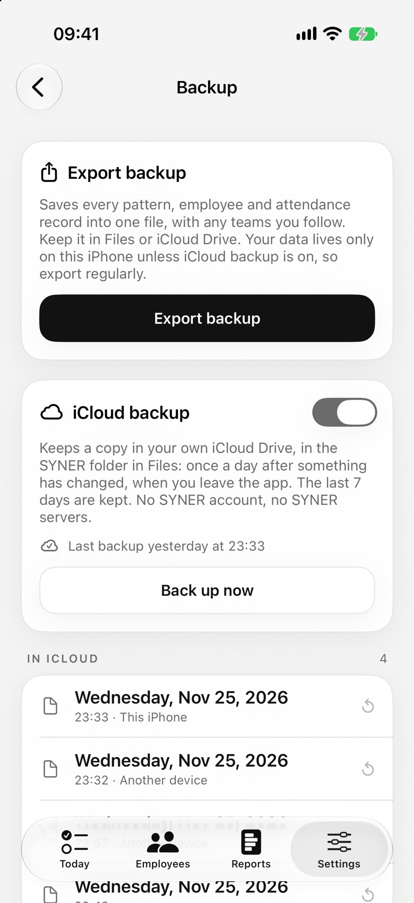
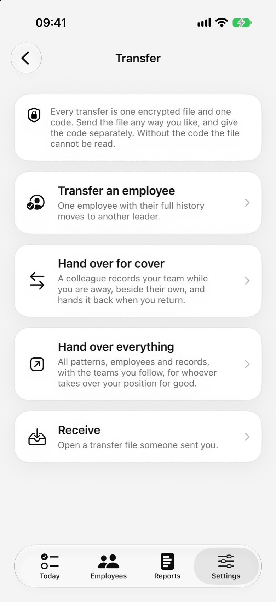
Together
12Follow your leaders' teams
A supervisor sees every leader's team on Today, under their own team. Their own team stays exactly as it was.
- Open the file a leader sent you and choose SYNER. From WhatsApp, open the file, touch the share button and pick SYNER.
- The first time, enter the leader's code and touch Add team.
- After that, each file shows what changed. Touch Update.
- On Today, scroll to Teams. Each card shows who is here and when the team last sent. A team that has not sent today is marked and comes first.
- Touch a card to open the team: Day for attendance on any day, People for each person's month, and Report for the monthly sheet.
The same file opened twice changes nothing, and an older file never replaces a newer one. The counters at the top of Today, and All Start and All End, are for your own team only.
One report for everyone. In Reports, touch All teams report for one sheet with your own team and every team you follow, each with its own total.
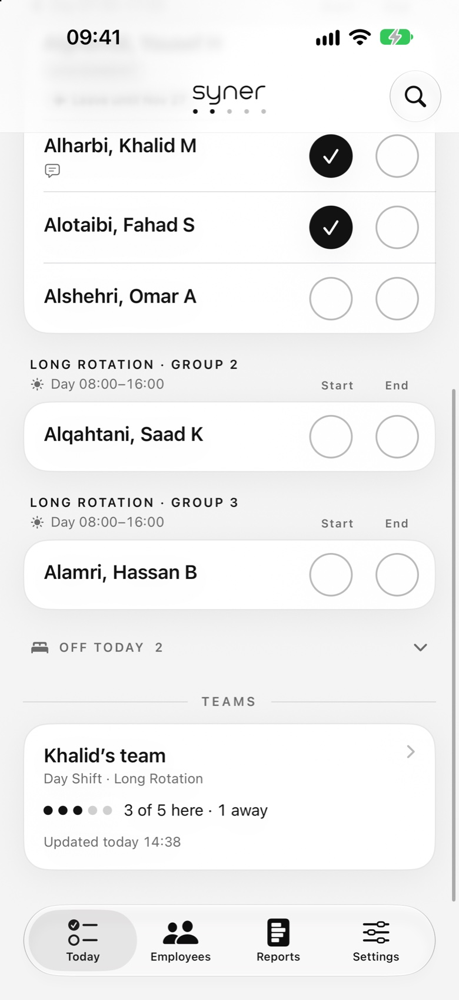
4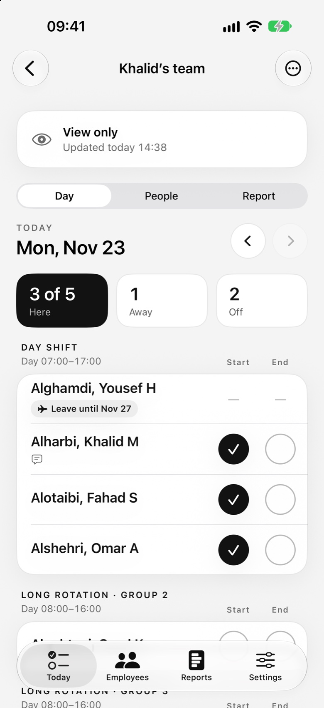
5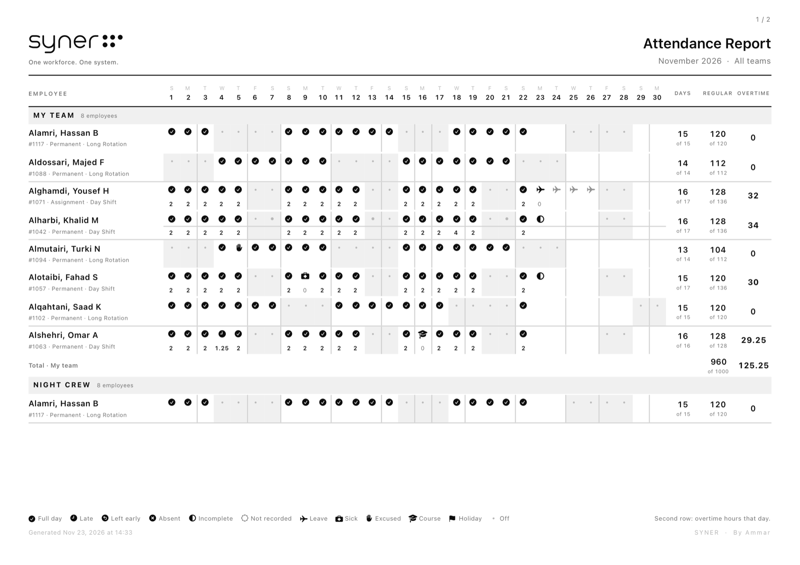
Together
13Hand your team over for cover
Going away for a while? A colleague can record your team beside their own and hand it back when you return. Nothing is lost on the way out or on the way back.
- Open Settings, then Transfer, and touch Hand over for cover.
- Type the name your colleague will see and touch Create file.
- Send the file to your colleague and give them the code separately.
Creating the file locks your team on your iPhone. You can still read everything, but only your colleague records from now on. That is what makes the return safe: there is only ever one copy being changed.
When you come back
- Your colleague sends you a return file and its code.
- Open the file in SYNER, enter the code and touch Take my team back.
Your team returns with everything recorded while you were away, and your iPhone is unlocked.
The file never arrived? Open Transfer and choose Cancel the cover to unlock your team. Do this only if your colleague has not started: a return sent after a cancel is not accepted.
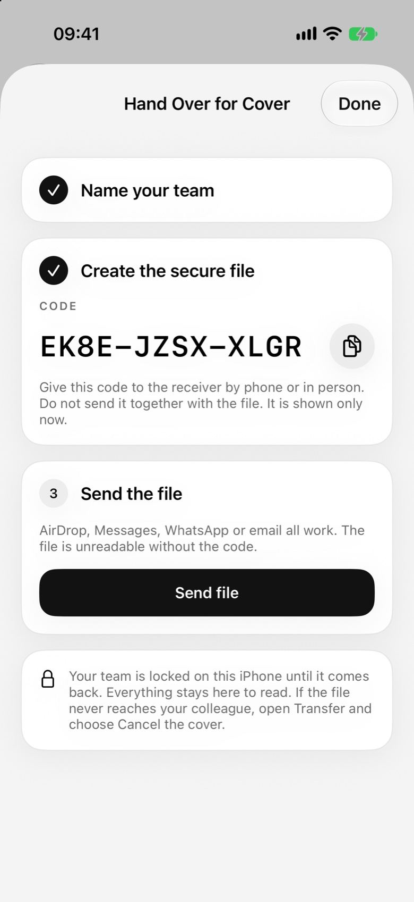
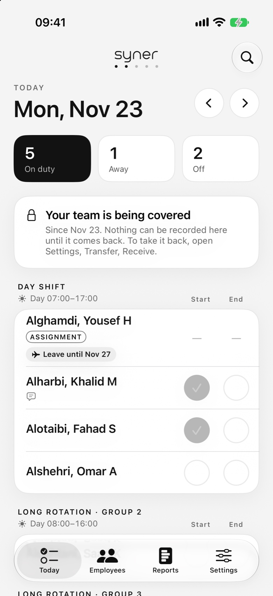
Together
14Cover a colleague's team
Your colleague's team arrives as a second team beside your own. Your own team is not touched.
- Open the file your colleague sent, enter the code and touch Start covering.
- At the top of Today, switch between My team and the team you are covering.
- While their team is selected, the whole app works on it: record attendance, add leave, open the reports, exactly as you do for your own.
- If your colleague shares with a supervisor, keep sending updates from Today. If they follow teams as a supervisor, the leaders' files open here.
Handing it back
- Select the covered team, then open Settings, Transfer, Return this team.
- Create the file, send it and give the code separately.
- Once your colleague confirms it arrived, touch Remove the covered team.
Return it before you hand over or erase your own iPhone. A covered team is your colleague's; SYNER will not erase your iPhone or hand it over while you still hold it.
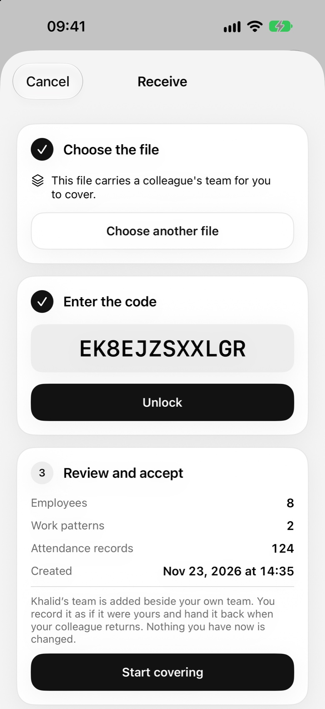
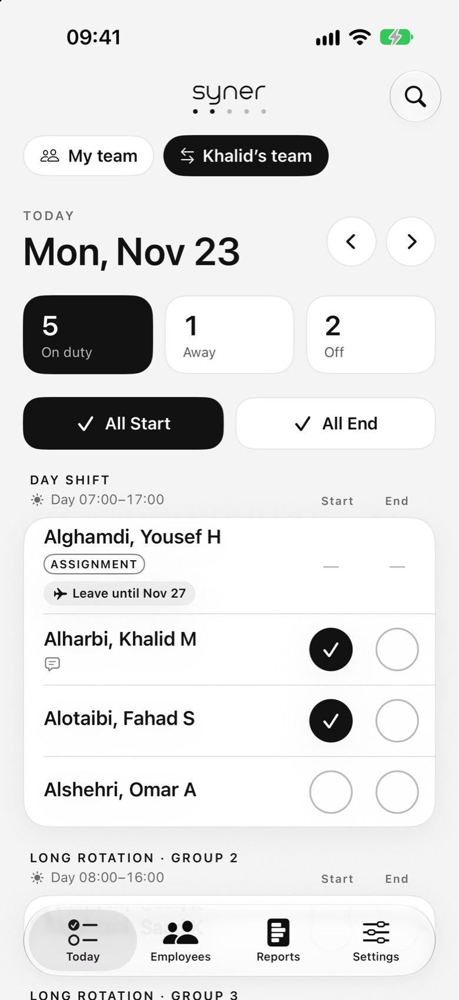
2That is the whole app. More answers are on the Support page.